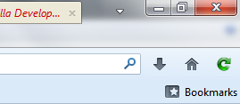

Oracle Tools
Brief
I've developed few tools for Oracle ADF and ADE development, it may help you in saving a lot of time and efforts.
As of now I'm working on two projects.
1. ADF Refresh
It is a browser add-on available on Firefox and Chrome. The purpose of this add-on is to remove all the query parameters and refresh the page. You can download it on any of the two supported browser. To download just click on the browser icon.
This is an opensource project hosted on GitHub. Report an Issue / Request a Feature.
Latest Version: 1.0

Screenshot of the Addon
2. Greasemonkey Scripts & Other Tools
Contact me on email for more details.